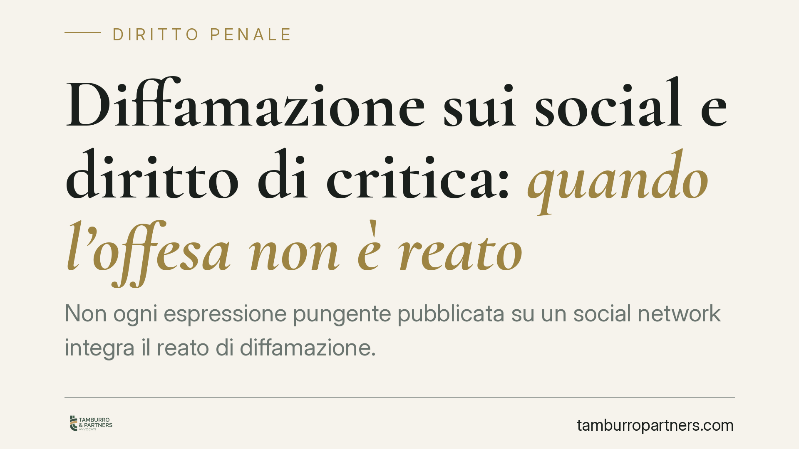

Diffamazione sui social e diritto di critica: quando l'offesa non è reato
Non ogni espressione pungente pubblicata su un social network integra il reato di diffamazione. Quando la critica si aggancia a fatti veri e di interesse pubblico, resta coperta dalla libertà di manifestazione del pensiero. Ma i confini sono stretti: verità, pertinenza e continenza devono coesistere. Analizziamo i principi affermati dalla giurisprudenza penale e le ricadute pratiche per chi scrive online.

Il fatto
Un utente aveva pubblicato su Facebook una serie di post con epiteti rivolti a un manager e a esponenti pubblici. In primo grado le espressioni erano state ritenute diffamatorie. La difesa ha sostenuto che ciascun termine non fosse un insulto gratuito, ma la conclusione critica di una condotta reale e documentata, su una vicenda di interesse collettivo.
Il principio che emerge dall'orientamento giurisprudenziale in materia è netto: le parole non vanno lette isolatamente. Un epiteto che, estratto dal contesto, appare offensivo può risultare lecito se è il commento di un fatto vero, pertinente e riferito con misura.
Inquadramento normativo
La diffamazione è disciplinata dall'art. 595 del codice penale: punisce chi, comunicando con più persone, offende l'altrui reputazione. Quando l'offesa è diffusa tramite un social network, si applica l'aggravante prevista dall'art. 595, comma 3, c.p., che colpisce l'offesa recata «col mezzo della stampa o con qualsiasi altro mezzo di pubblicità». La giurisprudenza riconduce pacificamente i post pubblici online a questa ipotesi aggravata, data la loro potenziale diffusione indiscriminata.
Il diritto di critica non è però una generica attenuante. Opera come causa di giustificazione ai sensi dell'art. 51 c.p. (esercizio di un diritto): se la condotta rientra nell'esercizio legittimo del diritto di manifestare il pensiero, garantito dall'art. 21 della Costituzione, il fatto non costituisce reato. Non si tratta cioè di un semplice sconto di pena, ma di una scriminante che esclude l'illiceità penale della condotta.
I tre requisiti cumulativi
Perché la scriminante operi, devono sussistere contemporaneamente tre condizioni:
- Verità del fatto. La critica deve poggiare su un fatto reale o almeno putativamente vero, verificato con diligenza. Un'opinione tagliente su un dato inventato resta diffamazione.
- Pertinenza (interesse pubblico). L'argomento deve avere rilevanza collettiva. La condotta di un amministratore d'azienda o di un soggetto con ruolo pubblico è di norma di interesse della comunità; la vita privata di un cittadino comune, salvo rare eccezioni, no.
- Continenza. L'espressione deve mantenere misura: può essere aspra, sarcastica, anche feroce nei toni, ma non trasmodare nell'attacco personale gratuito scollegato dal fatto.
Se anche uno solo di questi requisiti manca, la scriminante non si applica e il reato riemerge.
Perché il contesto conta più della parola
Il punto decisivo è il metodo di lettura. Un termine duro non va giudicato in sé, ma nel suo aggancio a una condotta concreta. Se ogni epiteto corrisponde a un comportamento reale e di interesse pubblico, la valutazione cambia: non c'è insulto fine a sé stesso, ma giudizio critico su fatti.
Assume rilievo anche la qualità del destinatario. Chi ricopre un ruolo pubblico o gestionale è esposto a un controllo critico più intenso rispetto al privato cittadino, proprio perché la sua attività incide su interessi collettivi. La tolleranza richiesta al soggetto pubblico è dunque maggiore, ma non illimitata: nemmeno lui può essere bersaglio di attacchi slegati dai fatti.
Implicazioni pratiche
Per chi usa i social, il messaggio è duplice. Da un lato, la critica anche aspra verso chi esercita funzioni pubbliche o economiche rilevanti non è automaticamente reato. Dall'altro, il margine è sottile: basta un fatto non verificato, un bersaglio privato o un tono che degenera nell'offesa gratuita per varcare il confine.
Per chi si ritiene diffamato, la lettura contestuale impone un'analisi puntuale: non è sufficiente isolare la parola offensiva, occorre verificare se essa commenti un fatto vero e pertinente, espresso con continenza.
Cosa fare in concreto
- Documenta i fatti prima di pubblicare: conserva fonti, atti, articoli a sostegno di ciò che affermi.
- Verifica l'interesse pubblico del tema: una critica su questioni private di un cittadino comune non gode della stessa tutela.
- Modera il registro espressivo: toni forti sì, attacco personale gratuito no.
- Se sei destinatario di post offensivi, archivia le prove (screenshot con data, URL, autore) prima che vengano rimossi.
- La valutazione dipende dal contesto e richiede un esame tecnico caso per caso, sia per agire sia per difendersi.
La linea di confine tra critica lecita e diffamazione penale non sta nella durezza delle parole, ma nel loro ancoraggio a fatti veri, pertinenti e riferiti con misura.
---
*Contributo informativo a cura di Tamburro & Partners - Avv. Giuseppe Tamburro. Non costituisce parere legale.*
Ogni condominio ha una storia a sé.
Se gestisci un'amministrazione e vuoi un confronto su una specifica questione condominiale, scrivi allo studio. Ti rispondiamo entro un giorno lavorativo.